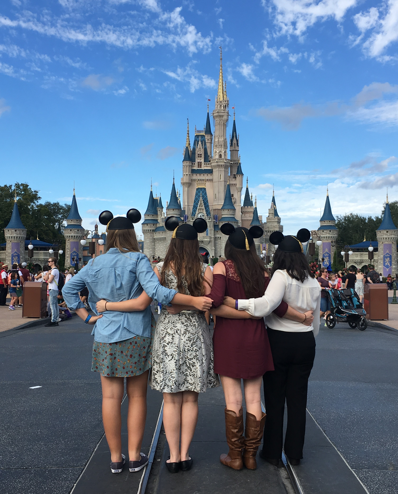
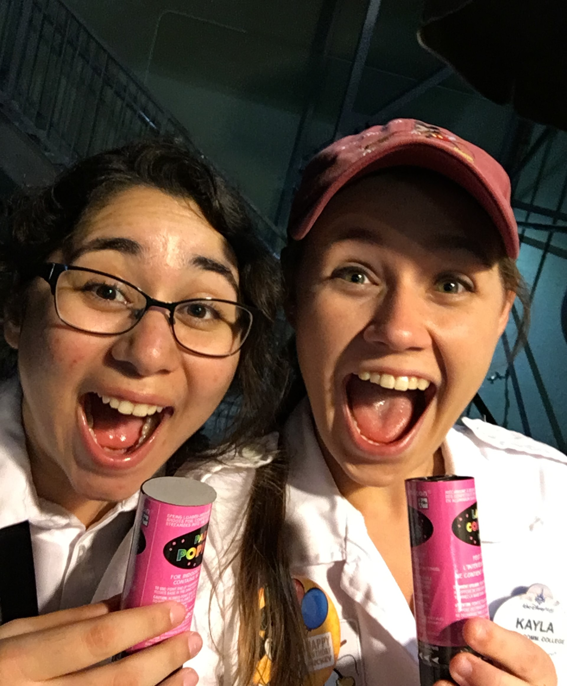

The Magic of the Disney College Program
What is the DCP?
|  |
The Disney College Program is an internship that college students can participate in where you work at Disney World or Disneyland for a semester. You can also apply to stay for another semester, which I did, so I ended up staying for a year. I was a custodial and guest services cast member on Main Street USA in the Magic Kingdom. This program was the best experience I have ever had. The people I worked with became my family. My friends from Disney were even bridesmaids in my wedding this past summer! I was given the opportunity to make magic for our guests every day. You become so immersed into the magic of Disney, I cannot even find the words to describe how amazing and fulfilling this internship is. It is actually difficult to take in so much joy and magic every day for so long and then walk away at the end to rejoin reality. When we are not working in the park, we get into the parks for free. My life for an entire year was non-stop theme park rides, food, and fun! I would definitely recommend the program to anyone. |
{kind=link}
{kind=link}
Making Magical Memories
|
One of my most memorable magical moments happened in front of Town Square Theater on Main Street. There was an older couple sitting in the rocking chairs, taking in the view. They started telling me about how they would come to the park every year since it opened. They described how it used to look and how they could still picture the scenes on Main Street from back then. They told me about past cast members they had met and the magic they had experienced. After they shared all of their stories with me, I asked them who their favorite Disney characters were. They told me Donald and Goofy! I went into the Emporium shop on Main street and picked out Donald and Goofy stuffed animals and brought them back to the couple. They loved it! As I was walking away, they stopped me and asked if I would autograph the tags of the stuffed animals to remember me by. This, of course, made my night even better! Another day, there was a couple that came and asked me for advice on the absolute “must-dos” of the park. It was their first time at Disney and they had accidently come into the Magic Kingdom, not knowing that they would have to leave the park at 4 for a Halloween party to begin. They had just found about the party and wanted to know my opinion on the best way to take advantage of the time they did have. We looked at the map and I showed them some of the things they could do. However, another cast member and I were able to talk to our manager and they were able to pull some strings. This couple was given tickets to the Halloween party and “VIP” seating for the parade that night. They were also given fast passes for Space Mountain! I was so excited that I was able to a part of that magic for them. The woman cried she was so happy and thankful! Once, there was a woman and her young son. I had given the little boy some popcorn. The boy’s mom was so thankful for such a small gesture! I talked her and asked about their day. She was telling me about how this was the first, and probably the only, time they would be visiting Disney. Her son told me about some of the rides they had gone on. We were near Town Square Theater, where Mickey Mouse has meet and greets. I asked if they wanted to meet him! She thought I was kidding at first. I said no I wasn’t kidding and gave them a fast pass to go to the front of the line to meet Mickey. She thanked me so many times and asked why I chose her and her son. I told her I just wanted their day to be the best that it could be! |
||
|  |
One night, a whole group of us were asked to participate in a gender reveal for this couple! They were going to live stream it in front of the castle. We were each given little confetti poppers. They got all ready and we all lined up right behind the couple so that all the confetti would go over their heads. It was a girl! I made some smaller magic as well. One night, there was little girl who looked about 5 years old and she was wearing a happy birthday button. As I was cleaning up the area outside the ice cream shop, the little girl dropped her entire ice cream cone. It was close to closing time for the park, so the shop was already closed but I went in and told them about the little girl and how her birthday was today and I’d like to replace her ice cream. The other cast members had already put away all the ice cream but they actually went into the back and pulled it back out, made a new ice cream and even added some oreo mickey ears to top it off! I brought out and gave it to the little girl’s mom and they were so excited! There also was a day that a few of us were given some stuffed animals from the Emporium. It was right before the Parade was going to come, so everyone was all lined up along the parade route waiting. We were instructed to just walk around and find some lucky kids to give our stuffed animals to! I chose a little boy in a stroller and gave him a stuffed Stitch. He hugged it so tight and wouldn’t let go! These are only a few of the amazing magical moments I had the opportunity to be a part of! |
{kind=link}
{kind=link}
{kind=link}
{kind=link}